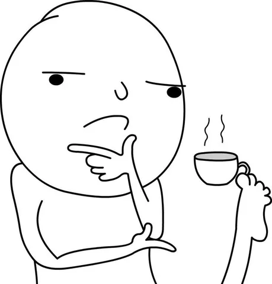

Мы сейчас активно экспериментируем с разными форматами ai-based работы, в том числе появился подход под названием exoteams. Это когда маленькая команда (1-3 инженера) самодостаточно тащит некоторую зону ответственности с минимальными накладными расходами на коммуникацию и согласования.
Среди прочих факторов, ей свойственны следующие штуки:
• нет (или почти нет) ритуалов больших команд - дейлики, планинги, ретро, демо, рефайнменты, груминги (втроем можно и без этого, аи-бот помогает с проджект-менеджментом, синхронизацией, статусами-отчетами);
• допускается отсутствие спринтов, оценок задач и квартального планирования (цели ставятся по метрикам, способы достижения доуточняются внутри команды с гранулярностью в ~месяц);
• постепенно отказываемся от код-ревью (уже писал об этом тут);
• команда отвечает за метрики и выбирает пути достижения цели сама (порой - с минимальным ресурсом продактов и аналитиков);
• SDLC минимально прерывается на согласования (четкий набор минимальных кволити-гейтов) и ожидание других команд (приветствуется иннер-сорс);
• подробное и формальное описание тикетов от человека требуется в меньшей степени (есть мощные скиллы продуктовой и технической проработки, автоформирование тесткейсов и правил приемки);
• для развития домена в целом требуется меньше людей (можем себе позволить больше доменов и направлений).
И тут я подумал - где-то я это уже видел. Ведь когда я начинал свою карьеру разработчика в 2008 (кстати, вот на днях 18 лет в Яндексе стукнуло), оно как было?
- не было никаких ритуалов, никакого скрама (он еще не был мейнстримом);
- не было спринтов, планирования, оценок задач (ну или команды разработки об этом не знали);
- не было код-ревью (ну да, первые пару коммитов в своей жизни я отправил почтой шефу, чтобы получить хоть какую-то обратную связь);
- команда как-то сама решала, что ей делать, и зачем (что значит "зачем", так ведь правильно, а продактов и аналитиков почти не было);
- никаких согласований, да и помощи ждать неоткуда (надеешься только на себя, а иннер-сорс не нужен, ибо монолит);
- четко описанные задачи? глупости, есть только тикеты вида "сделай хорошо" (и коммит-мессаджи "fix", "better", "faster");
- да и типичный сервис Яндекса делало человек 20, а не 200.
Так что же это, я уже тогда работал в экзотиме? И без всякого ИИ? Правда, иногда такая фигня получалась...
